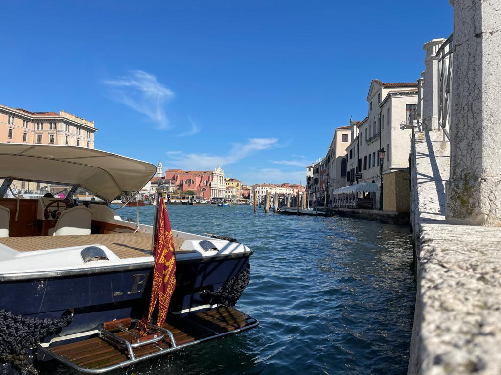

Venedig

Info
Venedig liegt in Italien.Es hat 260'000 Einwohner und eine Fläche von 414 km².

Meine Erfahrungen
2021 in den Frühlingsferien ist mein Onkel von Indien mit seiner Familie besuchen gekommen. Dann haben wir geplant nach Venedig zu gehen. Wir sind mit zwei Autos zu 12 nach Venedig gefahren. Meine Tante von Will wollte auch nach Venedig. Wir waren 3 Familien und haben die Fahrt genossen. Wo wir ankamen, haben wir ein Hotel für 3 Nächte gebucht. Nächsten Tag haben wir die Stadt erkundigt und eine Originale italienische Pizza gegessen. Wir haben ein kleines Schiff gemietet. Es war sehr schön. Wir haben dann in einem Restaurant noch gefeiert. Am letzten Tag haben wir eine Familie in Venedig besucht und sind dann nach Hause gefahren.

Wie sehr lohnt sich eine Reise nach Venedig?
- Anreise: 8/10
- wir sind mit dem Auto nach Italien gefahren. Man könnte ein Flug nach Venedig buchen und der Flug würde nur 1h gehen.
- Die Location: 9/10
- Super viel zu sehen einfach Allround eine Super Erfahrung.
- Spaßfaktor: 7/10
- Es gibt Menge zu tun, gutes Essen und sehr schöne Gegend, aber es hat noch was gefehlt.
- Wohlfaktor: 3/10
- Ich habe mich nicht so wohl gefühlt, weil die Leute dort eine andere Sprache gesprochen haben, und es waren zu viele Menschen dort.
- Hin Faktor: 9/10
- Ich will dort wieder hin, weil ich noch nicht alles gesehen habe.